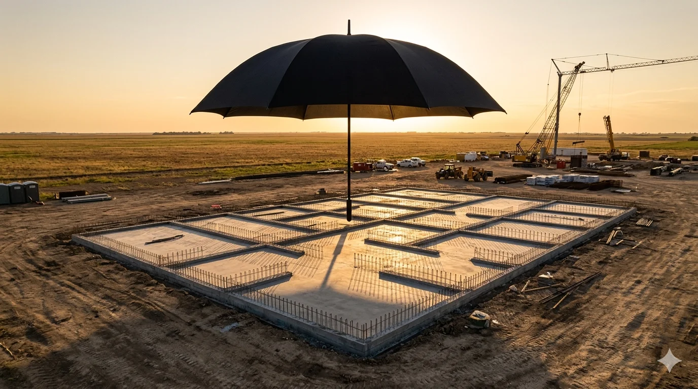

In January 2025, Sam Altman stood in the White House beside Donald Trump, Masayoshi Son, and Larry Ellison to announce the largest AI infrastructure project in history. Stargate: $500 billion, four years, a network of gigawatt-scale data centers across the United States and eventually the world. Fifteen months later, the project is collapsing from the periphery inward — and the center isn’t holding either.
The scorecard.In March, OpenAI and Oracle scrapped plans to expand the flagship Stargate campus in Abilene, Texas, from 1.2 gigawatts to 2 gigawatts after financing negotiations broke down. [1] Crusoe, the site developer, had already been struggling with reliability problems — a winter storm took liquid-cooling infrastructure offline for days. [2]
Microsoft swept in to rent the abandoned 900 megawatt expansion site from Crusoe. [3] Stargate was supposed to free OpenAI from Microsoft’s cloud. Now, Microsoft is occupying the data center that OpenAI couldn’t fill. Oracle, Stargate’s infrastructure partner, is the landlord to Microsoft at the site OpenAI abandoned. The access moat built a building. Someone else moved in.
On April 9, OpenAI paused Stargate UK entirely, citing energy costs and the regulatory environment — and, per Bloomberg, reining in spending ahead of a planned IPO. [4] The Nscale partnership announced in September 2025 — 8,000 Nvidia processors at Cobalt Park, Tyneside, first quarter 2026 — passed its own deadline without breaking ground. [5] In Abu Dhabi, Iran’s Islamic Revolutionary Guard Corps has threatened to destroy the $30 billion Stargate UAE facility, releasing satellite imagery of the site. [6]
Three sites. Three different failure modes. Financing (Abilene). Energy costs and regulation (UK). Missile threats (UAE). The original Abilene campus is operational — multiple buildings running Nvidia GPUs for OpenAI. But that campus predated the Stargate announcement. The new infrastructure — the expansion, the international sites, the multi-gigawatt network — is what the $500 billion was supposed to buy. None of it has materialized.
Stargate is not an outlier. Thirty to fifty percent of all US data center builds planned for 2026 face delays or cancellation — roughly half the industry’s pipeline. [7] Of the 16 gigawatts of planned capacity, only 5 are under construction. By 2027, it gets worse: 6.3 gigawatts under construction against 21.5 announced. [8] The bottleneck is not money — it is transformers, switchgear, and batteries that nobody can source fast enough. Stargate is just the project with its name on the White House lawn.
The pivot.While the sites were stalling, OpenAI abandoned its plan to build and own data centers altogether. In mid-March, The Information reported that OpenAI is now renting server capacity from cloud providers instead of building its own facilities. [9] The company restructured its entire compute team in response to this shift. [10] Total projected spending dropped from $1.4 trillion through 2033 to $600 billion through 2030. [11] OpenAI signed a $100 billion expansion of its AWS agreement — making Amazon, not Oracle or SoftBank, the de facto third-party infrastructure backbone. [12]
On April 29, the Financial Times reported that OpenAI has “in practice abandoned the joint venture.” [13] One person involved with Stargate said the company had “sidelined first-party data centers.” An insider close to SoftBank put it more bluntly: “People can basically define what ‘Stargate’ is for themselves. To some extent, any compute project involving SoftBank or Oracle can be called ‘Stargate.’” [13] OpenAI itself now calls it “an umbrella for our compute strategy.” In Norway, another Stargate-branded site fell through; OpenAI couldn’t close an offtake deal with Nscale at the Narvik facility, and Microsoft stepped in to lease the capacity instead. [13] Partners are “feeling let down and misled.” One source told the FT they prefer Microsoft as a tenant because “they are more creditworthy.” [13]
On April 11, three of Stargate’s original infrastructure leads — including Peter Hoeschele, who ran the early datacenter effort — left OpenAI for Meta. [14] The people who built the project are leaving. The day the FT story ran, OpenAI published a blog post claiming it had “surpassed” its 10 gigawatt target, with “more than 3 GW added in the last 90 days alone.” [15] The language was careful: “The financing models and partnership structures may evolve, but what matters is capacity coming online at scale.” This is the tell. Three gigawatts of leased capacity from AWS and Oracle is not three gigawatts of Stargate infrastructure. When you rent a hotel room, you don’t get to claim you built a hotel. The pivot may produce better economics for OpenAI — controlling chip decisions while renting the buildings is a defensible strategy. The question is whether the $500 billion investment thesis survives the change.
What the financing reveals.SoftBank, Stargate’s financial partner, took out a $40 billion unsecured bridge loan on March 27 with a twelve-month maturity. [16] The loan’s primary purpose: funding a $30 billion follow-on investment in OpenAI, bringing SoftBank’s total equity exposure to approximately $64.6 billion in a single pre-IPO company. [17] The loan matures in March 2027, before most Stargate sites will produce a kilowatt. SoftBank is financing the equity bet, not the infrastructure. Oracle, the designated builder, carries over $100 billion in debt on $30 billion in equity, with CDS spreads at their highest since 2009 and its own bondholders suing over undisclosed financing needs. [18] Beyond the original Abilene campus, nobody is financing Stargate construction.
OpenAI has also signed chip deals totaling nearly 27 gigawatts — with Nvidia, AMD, Broadcom, and Cerebras. [19] Stargate’s total planned capacity, as of September 2025, is approximately 7 gigawatts. [20] The chip commitments exceed the infrastructure capacity by roughly 4-to-1. Either the chips go into other people’s data centers — which is what “renting from AWS” means — or the commitments are aspirational on both sides.
The sovereign compute casualty.The UK pause is not just about energy costs. OpenAI for Countries — the program extending Stargate to the UK, Australia, Greece, the UAE, Slovakia, Kazakhstan, and others — was a sovereignty product. [21] The pitch: run frontier models locally within your jurisdiction on dedicated infrastructure. That requires physical infrastructure that OpenAI controls. If OpenAI can’t build it in the UK — stable grid, rule of law, English-speaking talent, George Osborne on the payroll — it can’t build it in Kazakhstan or Greece either.
Stargate was the largest AI infrastructure announcement ever made. Fifteen months later, the company that announced it calls it “an umbrella.” No international site has broken ground. The builder is being sued by its bondholders. The financier is providing equity financing through a 12-month loan. The people who ran the project are leaving for Meta. Partners who signed up to build data centers are watching Microsoft take the leases. The $500 billion bought a valuation, not a data center.
What happens next?Two scenarios.
First, Oracle’s balance sheet forces a reckoning. Over $100 billion in debt, negative free cash flow, and a quarter-trillion dollars in off-balance-sheet lease commitments are grounds for a credit downgrade. [18] Oracle can no longer finance the buildout at investment-grade rates. The 4.5 gigawatt agreement with OpenAI shrinks or restructures. SoftBank’s bridge loan matures in March 2027 without the infrastructure to justify a rollover. The Stargate venture is formally wound down or absorbed into existing bilateral cloud contracts.
Second, the sovereign compute product dies. OpenAI for Countries promised governments dedicated infrastructure inside their borders. If OpenAI is renting, not building, the infrastructure is Amazon’s or Microsoft’s — subject to US jurisdiction, not sovereign control. Governments that signed memoranda of understanding on the promise of sovereign AI discover they bought ChatGPT Edu licenses and a press photo with Sam Altman. The dependency on US cloud infrastructure that the sovereign product was supposed to escape remains intact.
For any AI infrastructure deal that follows — Stargate or otherwise — the test is simple: a site under construction, a power purchase agreement in force, and a builder whose balance sheet can finish the job. Anything less is a press release.
Notes
[1] Brody Ford, Edward Ludlow, and Dina Bass,“Oracle and OpenAI End Plans to Expand Flagship Data Center,”Bloomberg, March 6, 2026.
[2]“OpenAI’s massive Stargate data center canceled as firm can’t reach terms with Oracle,”Tom’s Hardware, March 8, 2026. Crusoe liquid-cooling disruption during winter weather is cited in the piece.
[3] Dina Bass and Brody Ford,“Microsoft Rents Data Center Project Developed for Oracle, OpenAI,”Bloomberg, March 27, 2026. Crusoe confirmed approximately 900 MW capacity, with the first building expected in mid-2027. EarlierBloomberg reporting(March 24) cited approximately 700 MW; the difference likely reflects site capacity vs. initial IT load.
[4]“OpenAI Pauses Stargate UK Data Center Citing Energy Costs,”Bloomberg, April 9, 2026. Bloomberg reports OpenAI is “reining in ambitious spending plans ahead of a highly anticipated public listing.” OpenAI statement: “We continue to explore Stargate UK and will move forward when the right conditions, such as regulation and the cost of energy, enable long-term infrastructure investment.” See alsoCNBC, April 9, 2026.
[5]“OpenAI’s flagship UK data project delayed in setback for Starmer,”The Telegraph, April 4, 2026. The original September 2025 announcement specified ~8,000 Nvidia processors at Cobalt Park, with a Q1 2026 target.
[6]“Iran threatens ‘complete and utter annihilation’ of OpenAI’s $30B Stargate AI data center in Abu Dhabi,”Tom’s Hardware, April 5, 2026. IRGC Brigadier General Ebrahim Zolfaghari’s statements; satellite imagery of the site included in the IRGC video.
[9]The Information, reporting on OpenAI’s shift from building to renting data center capacity, mid-March 2026. Cited byData Center Dynamics,The Deep Dive,CNBC, and others.
[10]“OpenAI reorganizes leadership amid data center strategy readjustment,”Data Center Dynamics, March 18, 2026. Sachin Katti appointed to oversee Stargate groups; the compute team split into three divisions.
[11]“OpenAI’s data center pivot underscores Wall Street spending concerns ahead of IPO,”CNBC, March 22, 2026. Total projected compute spending reduced from $1.4 trillion (through 2033) to $600 billion (through 2030).
[12] OpenAI expanded its existing AWS agreement by $100 billion over eight years; AWS was designated the exclusive third-party cloud distribution provider for OpenAI’s enterprise platform.CNBC, February 27, 2026.
[16] SoftBank $40 billion unsecured bridge financing facility, March 27, 2026. Twelve-month maturity (March 25, 2027). Syndicated by JPMorgan Chase, Goldman Sachs, Mizuho, SMBC, and MUFG. Interest rate not publicly disclosed as of publication.Source.
[17] SoftBank’s cumulative OpenAI equity exposure: $19 billion initial Stargate equity + $30 billion follow-on = $49 billion confirmed. Additional Vision Fund 2 positions bring the estimated total to approximately $64.6 billion (~13% ownership). OpenAI’s funding round closed at $122 billion in March 2026 at an $852 billion post-money valuation (initial $110B close in February expanded to $122B by final close). Author compilation fromS&P Global,CNBC,CNBC April 15, and SoftBank disclosures.
[19] Nvidia: 10 GW LOI, September 2025. AMD: 6 GW definitive agreement, October 2025. Broadcom: 10 GW custom silicon term sheet, October 2025. Cerebras: $10 billion / 750 MW inference deal, January 2026. Sources: respective company announcements andTom’s Hardware compilation, February 24, 2026.
[20] OpenAI,“Building the compute infrastructure for the Intelligence Age,”April 29, 2026, confirms the original 10 GW commitment: “When we announced Stargate in January 2025, we committed to securing 10GW of AI infrastructure in the United States by 2029.” September 23, 2025, expansion announcement brought the total to “nearly 7 gigawatts” of Stargate-branded planned capacity.
[21] OpenAI for Countries program: UK, Australia, Greece, UAE, Slovakia, Kazakhstan, and others.OpenAI, September 2025. See also“OpenAI pauses its Stargate UK data center plan,”Engadget, April 9, 2026.
[18] Oracle Corporation Form 10-Q, period ended November 30, 2025 (SEC filing). Total debt: $108.1 billion ($8.1B current + $100.0B non-current). Total stockholders’ equity: $30.5 billion. Off-balance-sheet lease commitments of $248 billion are disclosed in notes to financial statements. Bondholder lawsuit: Ohio Carpenters’ Pension Plan v. Oracle, filed January 14, 2026, NYSC.Bloomberg, January 15, 2026.
[7]Sightline Climate, 2026 Data Center Outlook. Of ~16 GW of US data center capacity planned for 2026 across 140 projects, only ~5 GW is under active construction. 25% of projects have not disclosed their powering strategy. See alsoBloomberg, April 1, 2026.
[8] 2027 pipeline: 6.3 GW under construction vs. 21.5 GW announced. Beyond 2028, 37 GW of planned capacity has not broken ground, and only 4.5 GW of that has begun work.Futurism, April 2026;ZeroHedge analysisciting Sightline Climate and Canaccord.
[14] Peter Hoeschele, Shamez Hemani, and Anuj Saharan left OpenAI and are joining Meta. Hoeschele led the early Stargate datacenter effort; Hemani worked on computing strategy; Saharan led within the computing organization.“Former OpenAI Stargate Leaders Plan to Join Meta Platforms,”Bloomberg, April 11, 2026.
[13]Financial Times, reported April 29, 2026. OpenAI has “in practice abandoned the joint venture.” One person involved with Stargate said the company had “sidelined first-party data centers.” OpenAI described Stargate as “an umbrella for our compute strategy.” A person close to SoftBank: “People can basically define what ‘Stargate’ is for themselves. To some extent, any compute project involving SoftBank or Oracle can be called ‘Stargate.’ Norway Stargate site abandoned; Microsoft leased the Narvik facility from Nscale. Partners “feeling let down and misled.” Source preference for Microsoft as tenant: “They are more creditworthy.” Cited viaTom’s Hardware, April 30, 2026. “Define for themselves” quote viaBigGo Finance, May 1, 2026, citing FT sources. See alsoCNBC, April 15, 2026, for details on Norway.
[15] OpenAI,“Building the compute infrastructure for the Intelligence Age,”April 29, 2026. Claims to have “surpassed” 10 GW target with “more than 3GW added in the last 90 days alone.” Note: “capacity” in OpenAI’s usage includes leased capacity from third-party providers (AWS, Oracle, Microsoft), not only self-built infrastructure. The blog’s language — “the financing models and partnership structures may evolve” — is an implicit acknowledgment of the FT reporting published the same day.